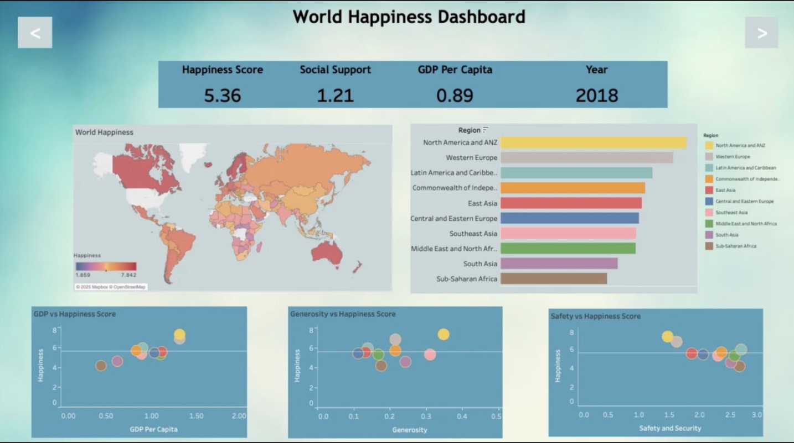
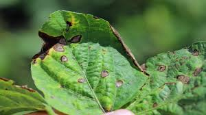

Hi, I’m Grace, a curious and driven data analyst who loves turning data into insights.
I enjoy collaborating with people, exploring new tech trends, and learning from different
cultures through global experiences.

Below you will find some of the projects I have worked on.
This project predicts whether data scientist candidates will change jobs after completing company training programs using three classification models: Logistic Regression, Random Forest, and LightGBM. LightGBM achieved the best performance with a ROC-AUC of 0.9053.

An interactive data visualization project exploring the World Happiness Report dataset. This dashboard identifies the core drivers of national well-being by analyzing correlations between Happiness Scores and socio-economic factors such as GDP per capita, security, generosity, and social support.

A web application that detects plant diseases from leaf images using deep learning. The model is built with an ensemble of five fine-tuned ResNet18 networks trained on the PlantVillage dataset, capable of classifying 38 plant disease categories. The system allows users to upload leaf images and returns the predicted plant species, disease type, and confidence score, achieving over 95% accuracy.
A hybrid spelling correction system designed for the medical domain, which detects and corrects both non-word errors (misspellings that do not exist in the vocabulary) and real-word errors (valid words used incorrectly in context).